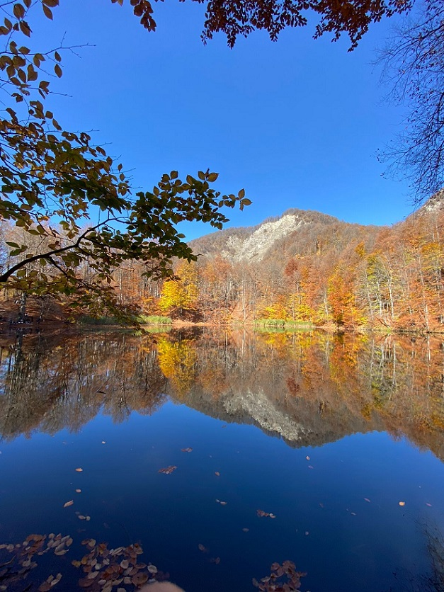

Şəkil və video çəkməyə həvəsim çoxdan var. Birinci şəkil "Şah Dili" adlanan yerdə çəkilib."Şah Dili — Abşeron yarımadasının uzaq cənub şərq qutaracağında yerləşir. Azərbaycan ərazisində yerləşən sahəsinə görə ən böyük dilidir. Üstəlik Şah Dili Azərbaycanın materikdə yerləşən ən ucqar şərq nöqtəsidir. İnzibati cəhətdən Bakı şəhəri Zirə qəsəbəsi ərazisinə daxildir.Bütünlüklə Abşeron Milli Parkı ərazisinə daxildir.

"Qaranohur gölü." Qaranohur — Azərbaycanın İsmayıllı rayonu ərazisində yerləşən yüksək dağ gölü. İsmayıllı şəhərindən 8 km şimal-şərqdə yerləşir. Dəniz səviyyəsindən 1520 m yüksəklikdə yerləşir. Böyük Qafqaz dağlarından axan Qaranohur çayının hövzəsinə daxildir.
